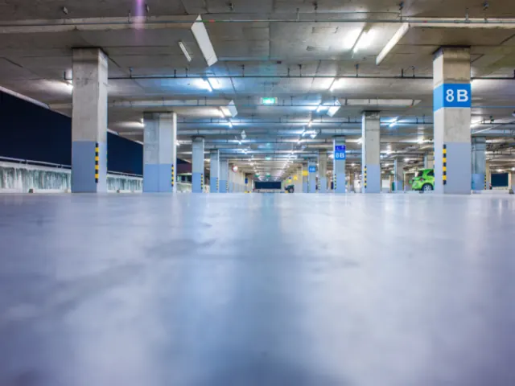

Parkeergarage Mariënburg
Bijgewerkt op 24 oktober 2026. Adressen, tijden en tarieven komen van de gemeente Nijmegen. Tarieven kunnen veranderen: kijk ter plekke altijd even op de automaat.
Parkeergarage Mariënburg ligt in het hart van de binnenstad, bij de Mariënburgkapel en filmtheater LUX. Je staat er binnen een paar minuten in de winkelstraten. Wel is het de laagste garage van Nijmegen. Hier lees je waar hij ligt, wat parkeren kost en hoe laat hij open is.

Waar ligt de garage?
De garage ligt aan de Arsenaalgas 8, midden in het centrum. Op de parkeerverwijsborden van de gemeente heet hij P5. Er zijn 300 plaatsen en 1 gehandicaptenparkeerplaats.
Let op de hoogte: met 1,85 meter is Mariënburg de laagste garage van het centrum. Met een SUV met dakkoffer of een busje kun je beter naar de Keizer Karel (2,10 meter).
Openingstijden
| Dag | Open |
|---|---|
| Maandag t/m woensdag | 7.00 tot 24.00 uur |
| Donderdag t/m zaterdag | 7.00 tot 4.00 uur |
| Zondag | 10.00 tot 4.00 uur |
Wat kost parkeren in deze garage?
In de parkeergarages van de gemeente betaal je overal hetzelfde: overdag het volle tarief, 's avonds en 's nachts bijna niets.
| Wanneer | Tarief |
|---|---|
| 8.00 tot 18.00 uur | € 3,90 per uur |
| 18.00 tot 8.00 uur | € 0,50 per uur |
| Maximaal per 24 uur | € 16,- |
Goed om te weten
- Met een motor of een aanhanger mag je de parkeergarages van de gemeente niet in.
- Langs de routes naar het centrum staan borden die laten zien hoeveel plekken er nog vrij zijn in elke garage.
- Met een gehandicaptenparkeerkaart parkeer je in Nijmegen gratis op straat en op terreinen zonder slagboom, maar in een parkeergarage betaal je gewoon.
- Een storing bij het betalen? Bel 0800 - 022 74 75. Te veel betaald door een probleem met de automaat, dan kun je het geld terugvragen bij de gemeente.
Wat is er in de buurt?
- LUX en de Mariënburgkapel: om de hoek. Handig voor een filmavond, want na 18.00 uur betaal je maar € 0,50 per uur.
- Winkelen: de Molenstraat, de Broerstraat en Plein 1944 liggen op een paar minuten lopen. Bekijk de openingstijden van het centrum.
- Grote Markt: ook op loopafstand. Op maandag en zaterdag is er markt, zie markten in Nijmegen.
Vol? Andere garages in de buurt
Staat de garage vol, dan kun je uitwijken naar een van de andere garages of parkeerterreinen in het centrum. Alle adressen, tarieven en de goedkope en gratis plekken vind je in onze gids Parkeren in Nijmegen.
Veelgestelde vragen
Waar ligt parkeergarage Mariënburg?
Aan de Arsenaalgas 8 (6511 PE), midden in het centrum van Nijmegen, bij de Mariënburgkapel en filmtheater LUX.
Wat kost parkeren in Mariënburg?
Van 8.00 tot 18.00 uur € 3,90 per uur, 's avonds en 's nachts € 0,50 per uur. Je betaalt maximaal € 16,- per 24 uur.
Hoe laat is parkeergarage Mariënburg open?
Maandag tot en met woensdag van 7.00 tot 24.00 uur, donderdag tot en met zaterdag van 7.00 tot 4.00 uur en zondag van 10.00 tot 4.00 uur.
Hoe hoog mag mijn auto zijn?
De maximale hoogte is 1,85 meter. Is je auto hoger, kies dan bijvoorbeeld de Keizer Karel (2,10 meter).
Hoeveel plekken heeft Mariënburg?
300 parkeerplaatsen en 1 gehandicaptenparkeerplaats.